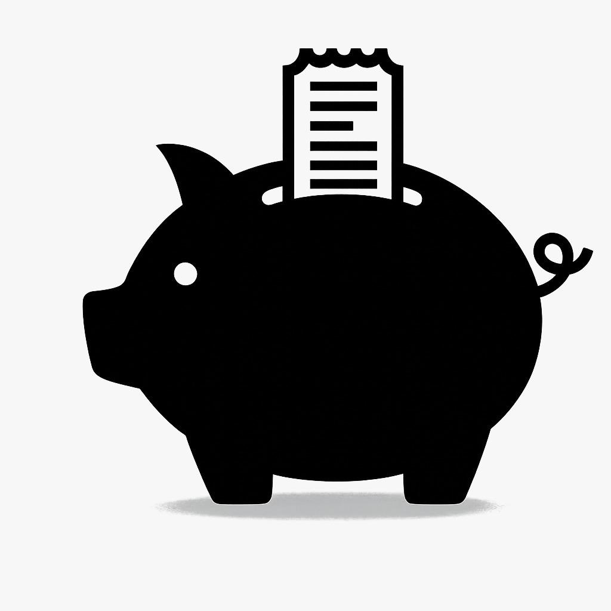
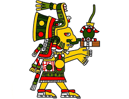

Trabajamos en distintos proyectos paeracubrir todas sus nesecidades, desde como lo es Smartbuget para su ecnomia como lo es eudamonia para su salud anorexica

La plataforma integral de gestión financiera con una interfaz intuitiva para el control total de tus finanzas

Plataforma de acompañamiento para pasientes que cuenten con anorexia nerviosa y cuenten con ayuda psicologoica y nutricional